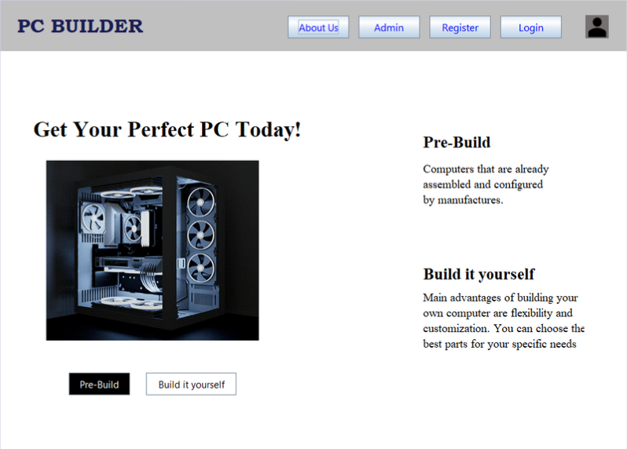
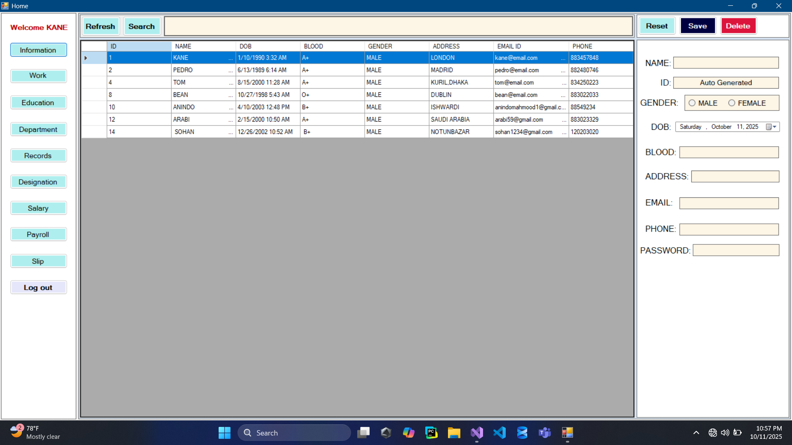
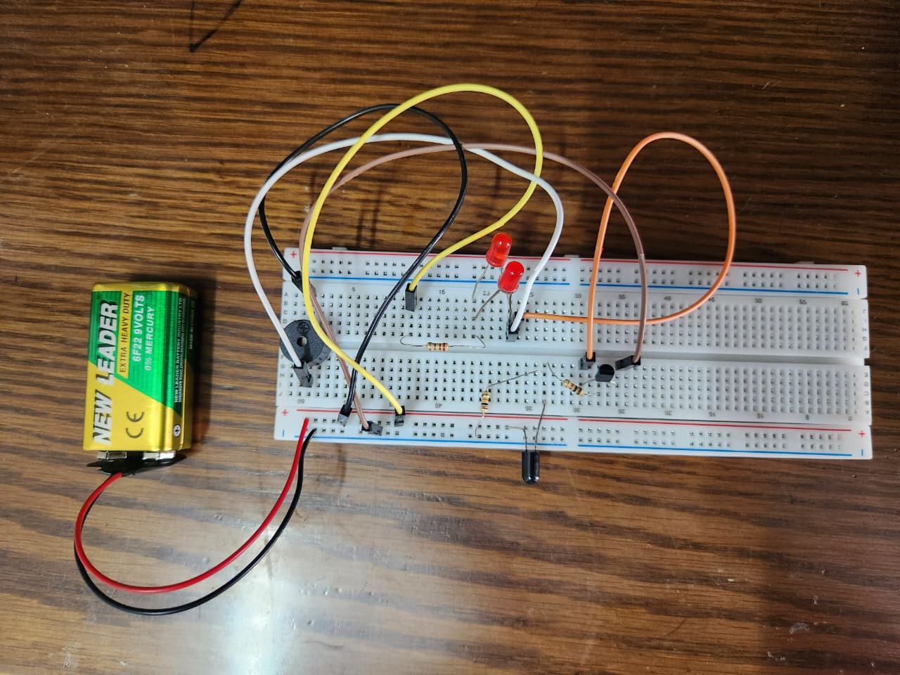

The PC Builder Website is designed to help users customize and configure their ideal personal computer. Built using Java, this website allows users to select compatible components such as processors, motherboards, casing and power supply. The platform allows to select parts, calculates total costs, and also suggest some pre-build PC. This project demonstrates key Java concepts like object-oriented programming, database integration on notepad, and dynamic user interfaces, making it a practical tool for learning and applying software development skills.
This HR Management System is a desktop-based application developed using C#, designed to manage employee information efficiently in a centralized environment. It enables HR personnel to add, view, search, update, and delete employee records, including details such as name, auto-generated ID, gender, date of birth, blood group, address, email, phone number, and password. The system also features organized navigation for modules like Information, Work, Education, Department, Salary, Payroll, and Records, helping streamline HR processes, improve data accuracy, and enhance overall workforce management.


This project is a compact fire security system built on a breadboard, designed to detect excessive heat or flames and provide both visual and auditory alerts. The system is powered by a 9V battery and utilizes an IR flame sensor (the black component at the bottom) or a thermistor to monitor the environment. When the sensor detects a fire or high temperature, it triggers a transistor that acts as a switch, allowing current to flow through the rest of the circuit. This results in the simultaneous activation of two red LEDs for a visual warning and a piezo buzzer that emits a loud alarm. Resistors are strategically placed throughout the layout to protect the components from overcurrent, making it a functional and effective prototype for basic emergency monitoring.